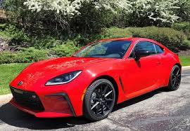
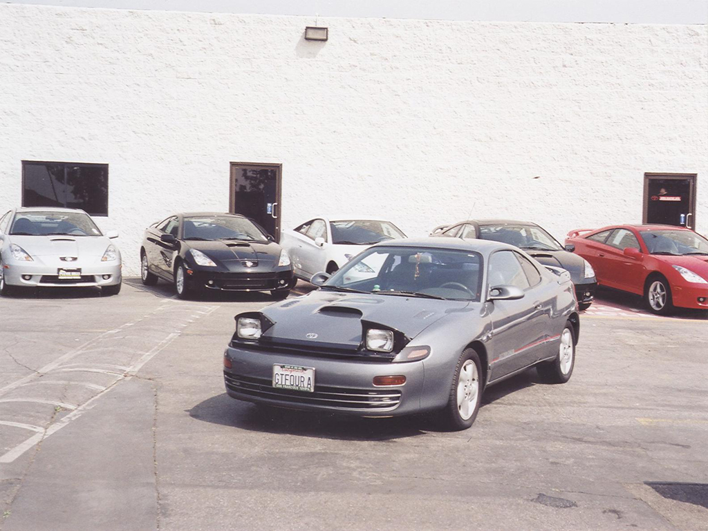

Toyota Supra
Año de creación: 1978
Motor: 3.0 L Turbo (B58 I6)
El Supra es el deportivo más legendario de Toyota, famoso por su potencia y su aparición en películas como *Rápido y Furioso*.

Toyota GR86
Año de creación: 2021
Motor: 2.4 L bóxer
El GR86 ofrece una experiencia de manejo pura, con tracción trasera y excelente equilibrio para los amantes de la velocidad.

Toyota MR2
Año de creación: 1984
Motor: 1.6 - 2.0 L (según generación)
El MR2 fue un pequeño pero ágil deportivo con motor central, famoso por su gran maniobrabilidad y estilo clásico.

Toyota Celica GT-Four
Año de creación: 1986
Motor: 2.0 L Turbo (3S-GTE)
El Celica GT-Four dominó los rallies de los 90 con su tracción integral y potente motor turboalimentado.